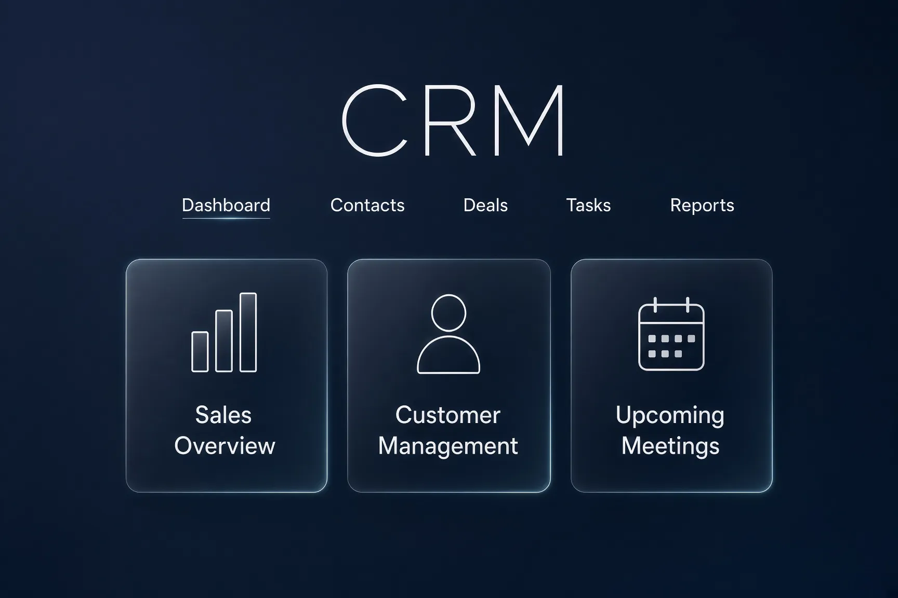
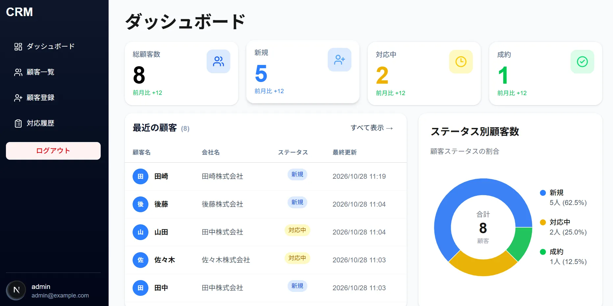

React / Next.js , Django REST API
CRM App
Test User (for login)
Username: testuser
Password: testpass123
Username: testuser
Password: testpass123


Overview
顧客情報や対応履歴を一元管理するために開発した CRM（顧客管理システム）です。
顧客の登録・編集・削除に加え、対応履歴の管理やステータス管理機能を実装しています。
フロントエンドとバックエンドを分離し、本番環境へのデプロイまで行いました。
Tech Stack
- Next.js
- TypeScript
- Tailwind CSS
- TanStack Query (React Query)
- Python
- Django
- Django REST Framework
- PostgreSQL
- Vercel
- Oracle Cloud Infrastructure
- Nginx
- Gunicorn
- Let's Encrypt
Features
- ログイン認証機能
- 顧客の登録・編集・削除（CRUD）
- 顧客詳細画面
- 対応履歴の登録・編集・削除
- ダッシュボードによる顧客状況の可視化
- レスポンシブ対応サイドバー
- React QueryによるAPIデータ取得・キャッシュ管理
- HTTPS対応の本番環境構築
Key Points
フロントエンドに Next.js、バックエンドに Django REST Framework を採用し、
API を介したフルスタック開発を経験しました。
Oracle Cloud 上に PostgreSQL・Django 環境を構築し、
Nginx・Gunicorn・Let's Encrypt を利用した HTTPS 化まで実施しています。
認証、データ管理、API連携、インフラ構築まで一貫して担当したことが本プロジェクトの大きな特徴です。